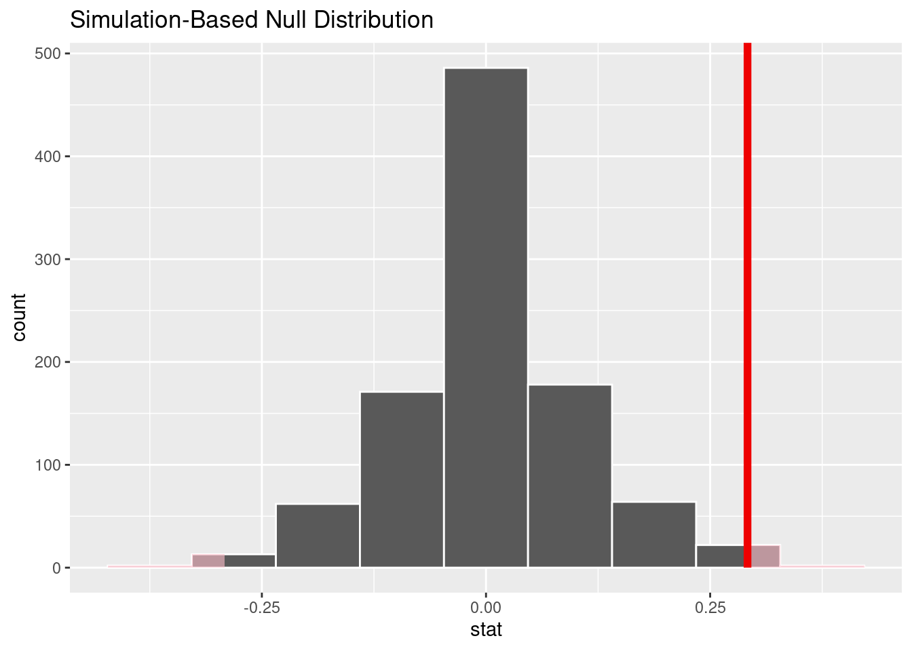

Using a sample to learn something about a population is called “statistical inference.” In this chapter, we’ll learn about one form of statistical inference called “hypothesis testing.” The focus will be on walking through the example the last chapter, “Introduction to randomization, Part 2,” and recasting it here as a formal hypothesis test.
There are very few new R commands here, but there are many new ideas that will require careful reading. You are not expected to be an expert on hypothesis testing after this one chapter. However, within the next few chapters, as we learn more about hypothesis testing and work through many more examples, the hope is that you will begin to assimilate and internalize the logic of inference and the steps of a hypothesis test.
10.1.1 Install new packages
There are no new packages used in this chapter.
10.1.2 Download the Quarto file
Look at either the top (Posit Cloud) or the upper right corner of the RStudio screen to make sure you are in your intro_stats project.
Then click on the following link to download this chapter as a Quarto file (.qmd).
Once the file is downloaded, move it to your project folder in RStudio and open it there.
10.1.3 Restart R and run all chunks
In RStudio, select “Restart R and Run All Chunks” from the “Run” menu.
10.1.4 Load packages
We load tidyverse and janitor to access the usual commands. We’ll continue to explore the infer package for investigating statistical claims. We load the openintro package to access the sex_discrimination data (the one with the male bank managers promoting male files versus female files).
library(tidyverse)
── Attaching core tidyverse packages ──────────────────────── tidyverse 2.0.0 ──
✔ dplyr 1.1.4 ✔ readr 2.1.5
✔ forcats 1.0.0 ✔ stringr 1.5.1
✔ ggplot2 3.5.1 ✔ tibble 3.2.1
✔ lubridate 1.9.4 ✔ tidyr 1.3.1
✔ purrr 1.0.2
── Conflicts ────────────────────────────────────────── tidyverse_conflicts() ──
✖ dplyr::filter() masks stats::filter()
✖ dplyr::lag() masks stats::lag()
ℹ Use the conflicted package (<http://conflicted.r-lib.org/>) to force all conflicts to become errors
library(janitor)
Attaching package: 'janitor'
The following objects are masked from 'package:stats':
chisq.test, fisher.test
We return to the sex discrimination experiment from the last chapter. We are interested in finding out if there is an association between the recommendation to promote a candidate for branch manager and the gender listed on the file being evaluated by the male bank manager.
10.3 Hypothesis testing
The approach we used in “Introduction to randomization, Part 2” was to assume that the two variables decision and sex were independent. From that assumption, we were able to compare the observed difference in promotion percentages between males and females from the actual data to the distribution of random values obtained by randomization. When the observed difference was far enough away from zero, we concluded that the assumption of independence was probably false, giving us evidence that the two variables were associated after all.
This logic is formalized into a sequence of steps known as a hypothesis test. In this section, we will introduce a rubric for conducting a full and complete hypothesis test for the sex discrimination example. (This rubric also appears in the Appendix. If you need the rubric as a file, you can also download copies either as a .qmd file here or as an html file here.)
A hypothesis test can be organized into five parts:
Exploratory data analysis
Hypotheses
Model
Mechanics
Conclusion
Below, I’ll address each of these steps.
10.3.1 Exploratory data analysis
Before we can answer questions using data, we need to understand our data.
Most data sets come with some information about the provenance and structure of the data. (Often this is called “metadata.”) Data provenance is the story of how the data was collected and for what purpose. Together with some information about the types of variables recorded, this is the who, what, when, where, why, and how. Without context, data is just a bunch of letters and numbers. You must understand the nature of the data in order to use the data. Information about the structure of the data is often recorded in a “code book.”
For data that you collect yourself, you’ll already know all about it, although should probably write that stuff down in case other people want to use your data (or in case “future you” wants to use the data). For other data sets, you hope that other people have recorded information about how the data was collected and what is described in the data. When working with data sets in R as we do for these chapters, we’ve already seen that there are help files—sometimes more or less helpful. In some cases, you’ll need to go beyond the brief explanations in the help file to investigate the data provenance. And for files we download from other places on the internet, we may have a lot of work to do.
Exercise 1
What are some ethical issues you might want to consider when looking into the provenance of data? Have a discussion with a classmate and/or do some internet sleuthing to see if you can identify one or two key issues that should be considered before you access or analyze data.
Please write up your answer here.
For exploring the raw data in front of us, we can use commands like View from the Console to see the data in spreadsheet form, although if we’re using Quarto documents, we can just type the name of the data frame in a code chunk and run it to print the data in a form we can navigate and explore. There is also glimpse to explore the structure of the data (the variables and how they’re coded), as well as other summary functions to get a quick sense of the variables.
Sometimes you have to prepare your data for analysis. A common example is converting categorical variables that should be coded as factor variables, but often are coded as character vectors, or are coded numerically (like “1” and “0” instead of “Yes” and “No”). Sometimes, data is missing. Sometimes, missing data is coded unusually (like “999”) and that has to be fixed before trying to calculate statistics. “Cleaning” data in the real world is often a task that takes more time than analyzing it!
Finally, once the data is in a suitably tidy form, we can use visualizations like tables, graphs, and charts to understand the data better. Often, there are conditions about the shape of our data that have to be met before inference is appropriate, and this step can help diagnose problems that could arise in the inferential procedure. This is a good time to look for outliers, for example.
10.3.2 Hypotheses
We are trying to ask some question about a population of interest. However, all we have in our data is a sample of that population. The word inference comes from the verb “infer”: we are trying to infer what might be true of a population just from examining a sample. It’s also possible that our question involves comparing two or more populations to each other. In this case, we’ll have multiple samples, one from each of our populations. For example, in our sex discrimination example, we are comparing two populations: male bank managers who consider male files for promotion, and male bank managers who consider female files for promotion. Our data gives us two samples who form only a part of the larger populations of interest.
To convince our audience that our analysis is correct, it makes sense to take a skeptical position. If we are trying to prove that there is an association between promotion and sex, we don’t just declare it to be so. We start with a “null hypothesis,” or an expression of the belief that there is no association. A null hypothesis always represents the “default” position that a skeptic might take. It codifies the idea that “there’s nothing to see here.”
Our job is to gather evidence to show that there is something interesting going on. The statement of interest to us is called the “alternative hypothesis.” This is usually the thing we’re trying to prove related to our research question.
We can perform one-sided tests or two-sided tests. A one-sided test is when we have a specific direction in mind for the effect. For example, if we are trying to prove that male files are more likely to be promoted than female files, then we would perform a one-sided test. On the other hand, if we only care about proving an association, then male files could be either more likely or less likely to be promoted than female files. (This is contrasted to the null that states that male files are equally likely to be promoted as female files.) If it seems weird to run a two-sided test, keep in mind that we want to give our statistical analysis a chance to prove an association regardless of the direction of the association. Wouldn’t you be interested to know if it turned out that male files were, in fact, less likely to be promoted?
You can’t cheat and look at the data first. In a normal research study out there in the real world, you develop hypotheses long before you collect data. So you have to decide to do a one-sided or two-sided test before you have the luxury of seeing your data pointing in one direction or the other.
Running a two-sided test is often a good default option. Again, this is because our analysis will allow us to show interesting effects in any direction.
We typically express hypotheses in two ways. First, we write down full sentences that express in the context of the problem what our null and alternative hypotheses are stating. Then, we express the same ideas as mathematical statements. This translation from words to math is important as it gives us the connection to the quantitative statistical analysis we need to perform. The null hypothesis will always be that some quantity is equal to (=) the null value. The alternative hypothesis depends on whether we are conducting a one-sided test or a two-sided test. A one-sided test is mathematically saying that the quantity of interest is either greater than (>) or less than (<) the null value. A two-sided test always states that the quantity of interest is not equal to (\(\neq\)) the null value. (Notice the math symbol enclosed in dollar signs in the previous sentence. In the HTML file, these symbols will appear correctly. In the Quarto document, you can hover the cursor anywhere between the dollar signs and the math symbol will show up. Alternatively, you can click somewhere between the dollar signs and hit Ctrl-Enter or Cmd-Enter, just like with inline R code.)
The most important thing to know is that the entire hypothesis test, up until you reach the conclusion, is conducted under the assumption that the null hypothesis is true. In other words, we pretend the whole time that our alternative hypothesis is false, and we carry out our analysis working under that assumption. This may seem odd, but it makes sense when you remember that the goal of inference is to try to convince a skeptic. Others will only believe your claim after you present evidence that suggests that the data is inconsistent with the claims made in the null.
10.3.3 Model
A model is an approximation—usually a simplification—of reality. In a hypothesis test, when we say “model” we are talking specifically about the “null model.” In other words, what is true about the population under the assumption of the null? If we sample from the population repeatedly, we find that there is some kind of distribution of values that can occur by pure chance alone. This is called the sampling distribution model. We have been learning about how to use randomization to understand the sampling distribution and how much sampling variability to expect, even when the null hypothesis is true.
Building a model is contingent upon certain assumptions being true. We cannot usually demonstrate directly that these assumptions are conclusively met; however, there are often conditions that can be checked with our data that can give us some confidence in saying that the assumptions are probably met. For example, there is no hope that we can infer anything from our sample unless that sample is close to a random sample of the population. There is rarely any direct evidence of having a properly random sample, and often, random samples are too much to ask for. There is almost never such a thing as a truly random sample of the population. Nevertheless, it is up to us to make the case that our sample is as representative of the population as possible. Additionally, we have to know that our sample comprises less than 10% of the size of the population. The reasons for this are somewhat technical and the 10% figure is just a rough guideline, but we should think carefully about this whenever we want our inference to be correct.
Those are just two examples. For the randomization tests we are running, those are the only two conditions we need to check. For other hypothesis tests in the future that use different types of models, we will need to check more conditions that correspond to the modeling assumptions we will need to make.
10.3.4 Mechanics
This is the nitty-gritty, nuts-and-bolts part of a hypothesis test. Once we have a model that tells us how data should behave under the assumption of the null hypothesis, we need to check how our data actually behaved. The measure of where our data is relative to the null model is called the test statistic. For example, if the null hypothesis states that there should be a difference of zero between promotion rates for males and females, then the test statistic would be the actual observed difference in our data between males and females.
Once we have a test statistic, we can plot it in the same graph as the null model. This gives us a visual sense of how rare or unusual our observed data is. The further our test statistic is from the center of the null model, the more evidence we have that our data would be very unusual if the null model were true. And that, in turn, gives us a reason not to believe the null model. When conducting a two-sided test, we will actually graph locations on both sides of the null value: the test statistic on one side of the null value and a point the same distance on the other side of the null value. This will acknowledge that we’re interested in evidence of an effect in either direction.
Finally, we convert the visual evidence explained in the previous paragraph to a number called a P-value. This measures how likely it is to see our observed data—or data even more extreme—under the assumption of the null. A small P-value, then, means that if the null were really true, we wouldn’t be very likely at all to see data like ours. That leaves us with little confidence that the null model is really true. (After all, we did see the data we gathered!) If the P-value is large—in other words, if the test statistic is closer to the middle of the null distribution—then our data is perfectly consistent with the null hypothesis. That doesn’t mean the null is true, but it certainly does not give us evidence against the null.
A one-sided test will give us a P-value that only counts data more extreme than the observed data in the direction that we explicitly hypothesized. For example, if our alternative hypothesis was that male files are more likely to be promoted, then we would only look at the part of the model that showed differences with as many or more male promotions as our data showed. A two-sided P-value, by contrast, will count data that is extreme in either direction. This will include values on both sides of the distribution, which is why it’s called a two-sided test. Computationally, it is usually easiest to calculate the one-sided P-value and just double it.1
Remember the statement made earlier that throughout the hypothesis testing process, we work under the assumption that the null hypothesis is true. The P-value is no exception. It tells us under the assumption of the null how likely we are to to see data at least as extreme (if not even more extreme) as the data we actually saw.
10.3.5 Conclusion
The P-value we calculate in the Mechanics section allows us to determine what our decision will be relative to the null hypothesis. As explained above, when the P-value is small, that means we had data that would be very unlikely had the null been true. The sensible conclusion is then to “reject the null hypothesis.” On the other hand, if the data is consistent with the null hypothesis, then we “fail to reject the null hypothesis.”
How small does the P-value need to be before we are willing to reject the null hypothesis? That is a decision we have to make based on how much we are willing to risk an incorrect conclusion. A value that is widely used is 0.05; in other words, if \(P < 0.05\) we reject the null, and if \(P > 0.05\), we fail to reject the null. However, for situations where we want to be conservative, we could choose this threshold to be much smaller. If we insist that the P-value be less than 0.01, for example, then we will only reject the null when we have a lot more evidence. The threshold we choose is called the “significance level,” denoted by the Greek letter alpha: \(\alpha\). The value of \(\alpha\) must be chosen long before we compute our P-value so that we’re not tempted to cheat and change the value of \(\alpha\) to suit our P-value (and by doing so, quite literally, move the goalposts). While there is nothing magical about an \(\alpha\) of 0.05, this is a well-established (if arbitrary and somewhat meaningless) convention in most of the research world. Unless we state otherwise, always assume for purposes of the exercises in this book that we are using a significance level of \(\alpha = 0.05\).
Note that we never accept the null hypothesis. The hypothesis testing procedure gives us no evidence in favor of the null. All we can say is that the evidence is either strong enough to warrant rejection of the null, or else it isn’t, in which case we can conclude nothing. If we can’t prove the null false, we are left not knowing much of anything at all.
The phrases “reject the null” or “fail to reject the null” are very statsy. Your audience may not be statistically trained. Besides, the real conclusion you care about concerns the research question of interest you posed at the beginning of this process, and that is built into the alternative hypothesis, not the null. Therefore, we need some statement that addresses the alternative hypothesis in words that a general audience will understand. we recommend the following templates:
When you reject the null, you can safely say, “We have sufficient evidence that [restate the alternative hypothesis].”
When you fail to reject the null, you can safely say, “We have insufficient evidence that [restate the alternative hypothesis].”
The last part of your conclusion should be an acknowledgement of the uncertainty in this process. Statistics tries to tame randomness, but in the end, randomness is always somewhat unpredictable. It is possible that we came to the wrong conclusion, not because we made mistakes in our computation, but because statistics just can’t be right 100% of the time when randomness is involved. Therefore, we need to explain to our audience that we may have made an error.
A Type I error is what happens when the null hypothesis is actually true, but our procedure rejects it anyway. This happens when we get an unrepresentative extreme sample for some reason. For example, perhaps there really is no association between promotion and sex. Even if that were true, we could accidentally survey a group of bank managers who—by pure chance alone—happen to recommend promotion more often for the male files. Our test statistic will be “accidentally” far from the null value, and we will mistakenly reject the null. Whenever we reject the null, we are at risk of making a Type I error. Given that we are conclusively stating a statistically discernible finding, if that finding is wrong, this is a false positive, a term that is synonymous with a Type I error. The significance level \(\alpha\) discussed above is, in fact, the probability of making a Type I error. (If the null is true, we will still reject the null if our P-value happens to be less than \(\alpha\).)
On the other hand, the null may actually be false, and yet, we may not manage to gather enough evidence to disprove it. This can also happen due to an unusual sample—a sample that doesn’t conform to the “truth”. But there are other ways this can happen as well, most commonly when you have a small sample size (which doesn’t allow you to prove much of anything at all) or when the effect you’re trying to measure exists, but is so small that it is hard to distinguish from no effect at all (which is what the null postulates). In these cases, we are at risk of making a Type II error. Anytime we say that we fail to reject the null, we have to worry about the possibility of making a Type II error, also called a false negative.
10.4 Example
Below, we’ll model the process of walking through a complete hypothesis test, showing how we would address each step. Then, you’ll have a turn at doing the same thing for a different question. Unless otherwise stated, we will always assume a significance level of \(\alpha = 0.05\). (In other words, we will reject the null if our computed P-value is less than 0.05, and we will fail to reject the null if our P-value is greater than or equal to 0.05.)
The research question is the following:
Is there an association between decision and sex in hiring branch managers for banks in the 1970s?
Note that the question does not ask, “Were bank managers more likely to promote male candidates?” That is a perfectly valid research question—and it was the question we asked in the last chapter where we first read about this experiment. But it is not the one we are asking here. We are simply asking, “Is there an association…?” An association can go either direction. Perhaps more male candidates were promoted. But it would also qualify as an association if more female candidates were promoted. The wording of the research question indicates that we will need to perform a two-sided test.
Note that there is some mathematical formatting below. As mentioned before, this is done by enclosing such math in dollar signs. Don’t worry too much about the syntax; just mimic what you see in the example.
10.5 Exploratory data analysis
10.5.1 Use data documentation (help files, code books, Google, etc.) to determine as much as possible about the data provenance and structure.
You can look at the help file by typing ?sex_discrimination at the Console. (However, do not put that command here in a code chunk. The Quarto document has no way of displaying a help file when it’s processed.) You can also type that into the Help tab in the lower-right panel in RStudio.
The help file doesn’t say too much, but there is a “Source” at the bottom. We can do an internet search for “Rosen Jerdee Influence of sex role stereotypes on personnel decisions”. As many academics articles on the internet are, this one is pay-walled, so we can’t read it for free. If you go to school or work for an institution with a library, though, you may be able to access articles through your library services. Talk to a librarian if you’d like to access research articles. As long as you have the citation details, librarians can often track down articles, and many are already accessible through library databases.
In this case, we can read the abstract for free. This tells us that the data we have is only one part of a larger set of experiments done.
This is also the place to comment on any ethical concerns you may have. For example, how was the data collected? Did the researchers follow ethical guidelines in the treatment of their subjects, like obtaining consent? Without accessing the full article, it’s hard to know in this case. But do your best in each data analysis task you have to try to find out as much as possible about the data.
In this section, we’ll also print the data set and use glimpse to summarize the variables.
In this section, we do any tasks required to clean the data. This will often involve using mutate, either to convert other variable types to factors, or compute additional variables using existing columns. It may involve using filter to analyze only one part of the data we care about.
If there is missing data, this is the place to identify it and decide if you need to address it before starting your analysis. It’s always important to check for missing data. It’s not always necessary to address it now as many of the R functions we use will ignore rows with missing data.
The easiest way to detect missing data is to try deleting rows that are missing some data with drop_na and see if the number of rows changes:
sex_discrimination |>drop_na()
Since the result still has 48 rows, there are no missing values.
The sex_discimination data is already squeaky clean, so we don’t need to do anything here.
10.5.3 Make tables or plots to explore the data visually.
As we have two categorical variables, a contingency table is a good way of visualizing the distribution of both variables together. (Don’t forget to include the marginal distribution and create two tables: one with counts and one with percentages!)
10.6.1 Identify the sample (or samples) and a reasonable population (or populations) of interest.
There are technically two samples of interest here. All the data comes from a group of 48 bank managers recruited for the study, but one group of interest are bank managers who are evaluating male files, and the other group of interest are bank managers who are evaluating female files.
One of the contingency tables above shows the sample sizes for each group in the marginal distribution along the bottom of the table (i.e., the column sums). There are 24 mangers with male files and 24 managers with female files.
The populations of interest are probably all bank managers evaluating male candidates and all bank managers evaluating female candidates, probably only in in the U.S. (where the two researchers were based) and only during the 1970s.
10.6.2 Express the null and alternative hypotheses as contextually meaningful full sentences.
\(H_{0}:\) There is no association between decision and sex in hiring branch managers for banks in the 1970s.
\(H_{A}:\) There is an association between decision and sex in hiring branch managers for banks in the 1970s.
Note: The null hypothesis is indicated by the symbol \(H_{0}\), often pronounced “H naught” or “H sub zero.” The alternative hypothesis is indicated by \(H_{A}\), pronounced “H sub A.” The alternative hypothesis is the claim that we’re interested in proving; it’s the statement that we want to make if the answer to the research question is “yes.”
10.6.3 Express the null and alternative hypotheses in symbols (when possible).
Note: This math looks very different in form and structure from the contextually meaningful full sentences above that just talk about “association.” We have to translate those sentences into something we can measure numerically. What would the numbers show if there were no association between decision and sex? If the null hypothesis were true, this would manifest as no difference between the proportion of males promoted and the proportion of females promoted. If the alternative hypothesis is true, there is a difference between these two proportions. The difference is not equal to zero.
Pay attention to the “success” condition (in this case, “promoted”). We could choose to measure either those promoted or those not promoted. The difference will be positive for one and negative for the other, so it really doesn’t matter which one we choose. Just make a choice and be consistent. Also pay close attention here to the order of the subtraction. Again, while it doesn’t matter conceptually, we need to make sure that the code we include later agrees with this order.
10.7 Model
10.7.1 Identify the sampling distribution model.
We will randomize to simulate the sampling distribution.
10.7.2 Check the relevant conditions to ensure that model assumptions are met.
Random (for both groups)
We have no evidence that these are random samples of bank managers. We hope that they are representative. If the populations of interest are all bank managers in the U.S. evaluating either male candidates or female candidates, then we have some doubts as to how representative these samples are. It is likely that the bank managers were recruited from limited geographic areas based on the location of the researchers, and we know that geography could easily be a confounder for sex discrimination (because some areas of the country might be more prone to it than others). Despite our misgivings, we will proceed on with the analysis, but we will temper our expectations for grand, sweeping conclusions.
10% (for both groups)
Regardless of the intended populations, 24 bank managers evaluating male files and 24 bank managers evaluating female files are surely less than 10% of all bank managers under consideration from those respective populations.
10.8 Mechanics
10.8.1 Compute the test statistic.
We let infer do the work here:
obs_diff_1 <- sex_discrimination |>observe(decision ~ sex, success ="promoted",stat ="diff in props", order =c("male", "female"))obs_diff_1
Note: obs_diff_1 is a tibble, albeit a small one, having only one column and one row. That tibble is what we need to feed into the visualization later. However, for reporting the value by itself, we have to pull it out of the tibble. We will do this below using the pull function. See the inline code in the next subsection.
10.8.2 Report the test statistic in context (when possible).
The observed difference in the proportion of promotion recommendations for male files versus female files is 0.2916667 (subtracting males minus females). Or, another way to say this: there is a 29.1666667% difference in the promotion rates between male files and female files.
Note: it’s been a few chapters since we’ve seen inline code, so make sure you remember how it works. Inline code starts with a backtick followed by the letter r and a space. It ends with a backtick. Everything inside the two backticks must be valid R code. We should always check that our inline code works before moving on. We do this by placing the cursor somewhere between the two backticks and then hitting Ctrl-Enter (Cmd-Enter). Do that with both code chunks above to see that the codes works and generates the correct answer. If you get an error, fix it before moving on. Otherwise, the next place you’ll run into a problem is not until you go to “Render” the document. That will generate an error that is much more challenging to track down.
10.8.3 Plot the null distribution.
set.seed(9999)decision_sex_test <- sex_discrimination |>specify(decision ~ sex, success ="promoted") |>hypothesize(null ="independence") |>generate(reps =1000, type ="permute") |>calculate(stat ="diff in props", order =c("male", "female"))decision_sex_test
decision_sex_test |>visualize(bins =9) +shade_p_value(obs_stat = obs_diff_1, direction ="two-sided")

Note: In this section, we will use the series of verbs from infer to generate all the information we need about the hypothesis test. The first code chunk will generate the null distribution (in this case, by simulating 1000 random repetitions of the permutation process). We call that output decision_sex_test here, but you’ll change that to another name for a different test. The recommended pattern is response_predictor_test.
Don’t forget to set the seed. We are using randomization to permute the values of the predictor variable in order to break any association that might exist in the data. This will allow us to explore the sampling distribution created under the assumption of the null hypothesis.
The second code chunk will allow us to plot the null distribution visually. When you get to the visualize step, leave the number of bins out at first. (Just type visualize() with empty parentheses.) If you determine that the default binning is not optimal, you can add back bins and experiment with the number. We know from the previous chapter that 9 bins is good here.
In the shade_p_value command, be careful about two things:
The obs_stat argument is used to tell R where our data is located. We stored that above as the variable obs_diff_1. When you do an example on your own, this will need to change to a different value (like, maybe obs_diff_2).
Look carefully at the direction. In the previous chapter, we used “greater” because our question was only about more males getting promoted. Here, though, we are conducting a two-sided test, so we have to change direction to “two-sided”.
In the output, you’ll note that there is light gray shading in both tails. This is because we are conducting a two-sided test, which means that we’re interested in values that are more extreme than our observed difference in both directions.
10.8.4 Calculate the P-value.
P_1 <- decision_sex_test |>get_p_value(obs_stat = obs_diff_1, direction ="two-sided")P_1
Note: Again, be careful to watch for the two things mentioned above: 1. change obs_stat to match your data; 2. check that the direction is consistent with your choice of a one-sided (“greater” or “less”) and two-sided (“two-sided”) test.
As with the test statistic earlier, the P-value appears above in a 1x1 tibble. That’s fine for this step, but in the inline code below, we will need to use pull again to extract the value.
10.8.5 Interpret the P-value as a probability given the null.
The P-value is 0.048. If there were no association between decision and sex, there would be a 4.8% chance of seeing data at least as extreme as we saw.
Some important things here:
We include an interpretation for our P-value. Remember that the P-value is the probability—under the assumption of the null hypothesis—of seeing results as extreme or even more extreme than the data we saw.
The P-value is less than 0.05 (just barely). Remember that as we talk about the conclusion in the next section of the rubric.
Take a second to check that the inline code works. Put the cursor in both inline code chunks and hit Ctrl-Enter (Cmd-Enter). When you’re doing this on your own, don’t move on if you have errors in your inline code!
10.9 Conclusion
10.9.1 State the statistical conclusion.
We reject the null hypothesis.
Note: the only choices here are “We reject the null hypothesis” (if the P-value is less than the significance level \(\alpha\), here 0.05) or “We fail to reject the null hypothesis” (if the P-value is greater than the significance level \(\alpha\), here 0.05).
10.9.2 State (but do not overstate) a contextually meaningful conclusion.
There is sufficient evidence to suggest that there is an an association between decision and sex in hiring branch managers for banks in the 1970s.
Note: the easiest thing to do here is just restate the alternative hypothesis. If we reject the null, then we have sufficient evidence for the alternative hypothesis. If we fail to reject the null, we have insufficient evidence for the alternative hypothesis. Either way, though, this contextually meaningful conclusion is all about the alternative hypothesis.
10.9.3 Express reservations or uncertainty about the generalizability of the conclusion.
We have some reservations about how generalizable this conclusion is due to the fact that we are lacking information about how representative our samples of bank managers were. We also point out that this experiment was conducted in the 1970s, so its conclusions are not valid for today.
Note: This would also be the place to point out any possible sources of bias or confounding that might be present, especially for observational studies.
10.9.4 Identify the possibility of either a Type I or Type II error and state what making such an error means in the context of the hypotheses.
As we rejected the null, we run the risk of committing a Type I error. It is possible that there is no association between decision and sex, but we’ve come across a sample in which male files were somehow more likely to be recommended for promotion.
After writing up your conclusions and acknowledging the possibility of a Type I or Type II error, the hypothesis test is complete. (At least for now. In the future, we will add one more step of computing a confidence interval.)
10.10 More on one-sided and two-sided tests
We want to emphasize again the difference between conducting a one-sided versus a two-sided test. You may recall that in “Introduction to simulation, Part 2”, we calculated this:
set.seed(9999)sex_discrimination |>specify(decision ~ sex, success ="promoted") |>hypothesize(null ="independence") |>generate(reps =1000, type ="permute") |>calculate(stat ="diff in props", order =c("male", "female")) |>get_p_value(obs_stat = obs_diff_1, direction ="greater")
The justification was that, back then, we already suspected that male files were more likely to be promoted, and it appears that our evidence (the test statistic, or our observed difference) was pretty far in that direction. (Actually, we may get a slightly different number each time. Remember that we are randomizing. Therefore, we won’t expect to get the exact same numbers each time.)
By way of contrast, in this chapter we computed the two-sided P-value:
set.seed(9999)sex_discrimination |>specify(decision ~ sex, success ="promoted") |>hypothesize(null ="independence") |>generate(reps =1000, type ="permute") |>calculate(stat ="diff in props", order =c("male", "female")) |>get_p_value(obs_stat = obs_diff_1, direction ="two-sided")
The only change to the code is the word “two-sided” (versus “greater”) in the last line.
Our P-value in this chapter is twice as large as it could have been if we had run a one-sided test.
Doubling the P-value might mean that it no longer falls under the significance threshold \(\alpha = 0.05\) (although in this case, we still came in under 0.05). This raises an obvious question: why use two-sided tests at all? If the P-values are higher, that makes it less likely that we will reject the null, which means we won’t be able to prove our alternative hypothesis. Isn’t that a bad thing?
As a matter of fact, there are many researchers in the world who do think it’s a bad thing, and routinely do things like use one-sided tests to give them a better chance of getting small P-values. But this is not ethical. The point of research is to do good science, not prove your pet theories correct. There are many incentives in the world for a researcher to prove their theories correct (money, awards, career advancement, fame and recognition, legacy, etc.), but these should be secondary to the ultimate purpose of advancing knowledge. Sadly, many researchers out there have these priorities reversed. I do not claim that researchers set out to cheat; I suspect that the vast majority of researchers act in good faith. Nevertheless, the rewards associated with “successful” research cause cognitive biases that are hard to overcome. And “success” is often very narrowly defined as research that produces small P-values.
A better approach is to be conservative. For example, a two-sided test is not only more conservative because it produces higher P-values, but also because it answers a more general question. That is, it is scientifically interesting when an association goes in either direction (e.g. more male promotions, but also possibly more female promotions). This is why we recommended above using two-sided tests by default, and only using a one-sided test when there is a very strong research hypothesis that justifies it.
10.11 A reminder about failing to reject the null
It’s also important to remember that when we fail to reject the null hypothesis, we are not saying that the null hypothesis is true. Neither are we saying it’s false. Failure to reject the null is really a failure to conclude anything at all. But rather than looking at it as a failure, a more productive viewpoint is to see it as an opportunity for more research, possibly with larger sample sizes. We never conclude that we have evidence in favor of the null hypothesis! At best, our data might be consistent with the null hypothesis. But that is not the same thing as proving the null hypothesis.
Even when we do reject the null, it is important not to see that as the end of the conversation. Too many times, a researcher publishes a “statistically significant” finding in a peer-reviewed journal, and then that result is taken as “Truth.” We should, instead, view statistical inference as incremental knowledge that works slowly to refine our state of scientific knowledge, as opposed to a collection of “facts” and “non-facts.”
In fact, we won’t use the term “statistically significant” anywhere in this book. The word “significant” has the unfortunate connotation of “important.” A statistical finding might meet the threshold for rejecting the null hypothesis without being a “large” or “important” finding. Instead, we will refer to results as “statistically discernible” when we reject the null hypothesis. We can only conclude that our data is mathematically unlikely given the null hypothesis, which means we can “discern” that the null hypothesis is not likely to be true.
10.12 Your turn
Now it’s your turn to run a complete hypothesis test. Determine if males were admitted to the top six UC Berkeley grad programs at a higher rate than females. For purposes of this exercise, we will not take into account the Dept variable as we did in the last chapter when we discussed Simpson’s Paradox. But as that is a potential source of confounding, be sure to mention it in the part of the rubric where you discuss reservations about your conclusion.
As always, use a significance level of \(\alpha = 0.05\).
We have copied the template below. You need to fill in each step. Some of the steps will be the same or similar to steps in the example above. It is perfectly okay to copy and paste R code, making the necessary changes. It is not okay to copy and paste text. You need to put everything into your own words. Also, don’t copy and paste the parts that are labeled as “Notes”. That is information to help you understand each step, but it’s not part of the statistical analysis itself.
The template below is exactly the same as in the Appendix up to the part about confidence intervals which we haven’t learned yet.
Be sure to use new variable names everywhere! The test statistic should be called obs_diff_2 so you don’t mess up the value of obs_diff_1 above. Same with the P-value: use P_2 in place of P_1. The name of the test should also change. I might suggest admit_gender_test in line with our convention for naming these things response_predictor_test.
Exploratory data analysis
Use data documentation (help files, code books, Google, etc.) to determine as much as possible about the data provenance and structure.
Please write up your answer here.
# Add code here to print the data
# Add code here to glimpse the variables
Prepare the data for analysis.
# Add code here to prepare the data for analysis.
Please write up your answer here.
Make tables or plots to explore the data visually.
# Add code here to make tables or plots.
# Since we know you will need to produce two contingency tables, # here's another code chunk for the second one.# In the future, though, you will need to know when to create # extra code chunks on your own.
Hypotheses
Identify the sample (or samples) and a reasonable population (or populations) of interest.
Please write up your answer here.
Express the null and alternative hypotheses as contextually meaningful full sentences.
\(H_{0}:\) Null hypothesis goes here.
\(H_{A}:\) Alternative hypothesis goes here.
Express the null and alternative hypotheses in symbols (when possible).
\(H_{0}: math\)
\(H_{A}: math\)
Model
Identify the sampling distribution model.
Please write up your answer here.
Check the relevant conditions to ensure that model assumptions are met.
Condition 1
Check the condition here.
Condition 2
Check the condition here.
Mechanics
Compute the test statistic.
# Add code here to compute the test statistic.# Don't forget to use obs_diff_2 instead.
Report the test statistic in context (when possible).
Please write up your answer here. (Use inline code and check that it works before moving on!)
Plot the null distribution.
set.seed(9999)# Add code here to generate the null distribution.# Run 1000 reps like in the earlier example.
# Add code here to plot the null distribution.
Calculate the P-value.
# Add code here to calculate the P-value.# Don't forget to use P_2 instead.
Note: A P-value can never be exactly zero. It might be true that in 1000 simulations, none resulted in a value more extreme than the data. But it’s never impossible to get any particular extreme value by chance alone. When P-values are very small, the convention is to say \(P < 0.001\).
Interpret the P-value as a probability given the null.
Please write up your answer here. If you tried to use inline code, the P-value would be reported here as 0, which is not really correct. So you should not use inline code for this part.
Conclusion
State the statistical conclusion.
Please write up your answer here.
State (but do not overstate) a contextually meaningful conclusion.
Please write up your answer here.
Express reservations or uncertainty about the generalizability of the conclusion.
Please write up your answer here.
Identify the possibility of either a Type I or Type II error and state what making such an error means in the context of the hypotheses.
Please write up your answer here.
10.13 Conclusion
A hypothesis test is a formal set of steps—a procedure, if you will—for implementing the logic of inference. We take a skeptical position and assume a null hypothesis in contrast to the question of interest, the alternative hypothesis. We build a model under the assumption of the null hypothesis to see if our data is consistent with the null (in which case we fail to reject the null) or unusual/rare relative to the null (in which case we reject the null). We always work under the assumption of the null so that we can convince a skeptical audience using evidence. We also take care to acknowledge that statistical procedures can be wrong, and not to put too much credence in the results of any single set of data or single hypothesis test.
10.13.1 Preparing and submitting your assignment
From the “Run” menu, select “Restart R and Run All Chunks”.
Deal with any code errors that crop up. Repeat steps 1–2 until there are no more code errors.
Spell check your document by clicking the icon with “ABC” and a check mark.
Hit the “Render” button one last time to generate the final draft of the HTML file. (If there are errors here, you may need to go back and fix broken inline code or other markdown issues.)
Proofread the HTML file carefully. If there are errors, go back and fix them, then repeat steps 1–5 again.
If you have completed this chapter as part of a statistics course, follow the directions you receive from your professor to submit your assignment.
This is not technically the most mathematically appropriate thing to do, but it’s a reasonable approximation in many common situations.↩︎